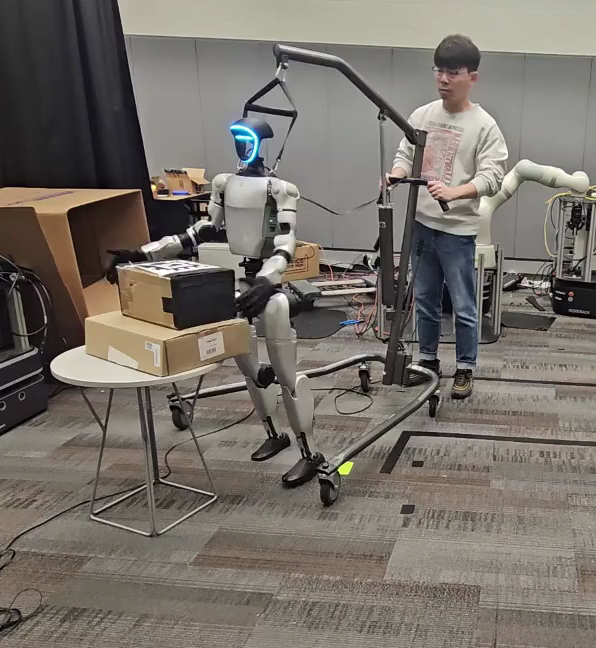
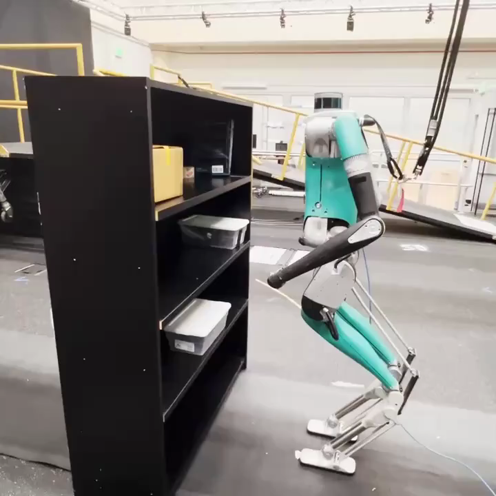

|
Hyunyoung Jung I am a second-year Ph.D. student in Robotics at Georgia Tech, advised by Dr. Sehoon Ha and working closely with Dr. Hae-Won Park. Before my Ph.D., I received my Master's degree in Electrical and Computer Engineering from Georgia Tech and Bachelor's degree in Mechanical Engineering and Computer Science and Engineering at Seoul National University. Email / Google Scholar / Twitter / Linkedin / Github |

|
ResearchMy research focuses on developing learning-based control algorithms that enable robust, agile, and interactive robot behaviors in human-centered environments. I have worked on integrating model-based control with reinforcement learning for quadrupedal and humanoid locomotion. Currently, I am exploring whole-body humanoid manipulation using human data. |
Publications and Preprints(*: equal contribution) |

|
PPF: Pre-training and Preservative Fine-tuning of Humanoid Locomotion via Model-Assumption-based Regularization
Hyunyoung Jung*, Zhaoyuan Gu*, Ye Zhao, Hae-Won Park, Sehoon Ha RA-L, 2025 project page / video / arXiv We introduce a learning framework for effectively training a humanoid locomotion policy that imitates the behavior of a model-based controller while extending its capabilities to handle more complex locomotion tasks. |

|
Imitating and Finetuning Model Predictive Control for Robust and Symmetric Quadrupedal Locomotion
Donghoon Youm*, Hyunyoung Jung*, Hyeongjun Kim, Jemin Hwangbo, Hae-Won Park, Sehoon Ha RA-L, 2023 project page / video / arXiv We propose a learning framework that can bridge between model-based and learning-based approaches for legged robot control by imitating expert model predictive control (MPC) and fine-tuning the pre-trained policy with reinforcement learning. |
|
 |
AdaptManip: Learning Adaptive Whole-Body Object Lifting and Delivery with Online Recurrent State Estimation
Morgan Byrd, Donghoon Baek, Kartik Garg, Hyunyoung Jung, Daesol Cho, Maks Sorokin, Robert Wright, Sehoon Ha, Under Review project page / arXiv We introduce AdaptManip, a fully autonomous framework that enables humanoid robots to navigate, lift objects, and deliver them in an integrated manner. Its recurrent pose estimator provides robust state estimation under intermittent and noisy visual observations, supporting reliable closed-loop loco-manipulation. |
|
 |
Opt2Skill: Imitating Dynamically-feasible Whole-Body Trajectories for Versatile Humanoid Loco-Manipulation
Fukang Liu, Zhaoyuan Gu, Yilin Cai, Ziyi Zhou, Hyunyoung Jung, Jaehwi Jang, Shijie Zhao, Sehoon Ha, Yue Chen, Danfei Xu, Ye Zhao RA-L, 2025 project page / video / arXiv We introduce Opt2Skill, an end-to-end pipeline that combines model-based trajectory optimization with RL to achieve robust whole-body loco-manipulation. |

|
CrossLoco: Human Motion Driven Control of Legged Robots via Guided Unsupervised Reinforcement Learning
Tianyu Li, Hyunyoung Jung, Matthew Gombolay, Yong Kwon Cho, Sehoon Ha ICLR, 2024 project page / video / arXiv / paper We introduce a guided unsupervised reinforcement learning framework that simultaneously learns robot skills and their correspondence to human motions. |
Education |
Georgia Institute of TechnologyPh.D. in Robotics |
Aug. 2024 - Present |
Georgia Institute of TechnologyM.S in Electrical and Computer Engineering |
Aug. 2022 - May. 2024 |
Seoul National UniversityB.S. in Mechanical EngineeringB.S. in Computer Science and Engineering |
Mar. 2016 - Aug. 2022 |
Work and Teaching Experiences |
CS 8803 Deep Reinforcment Learning for Intel. ControlTeaching AsistantGeorgia Institute of Technology |
Spring 2024 |
CS 3451 Computer GraphicsTeaching AsistantGeorgia Institute of Technology |
Spring 2023 |
Saige ResearchResearch Intern |
Apr. 2021 - Dec. 2021 |
Samsung ElectronicsStudent Intern |
Jan. 2021 - Feb. 2021 |